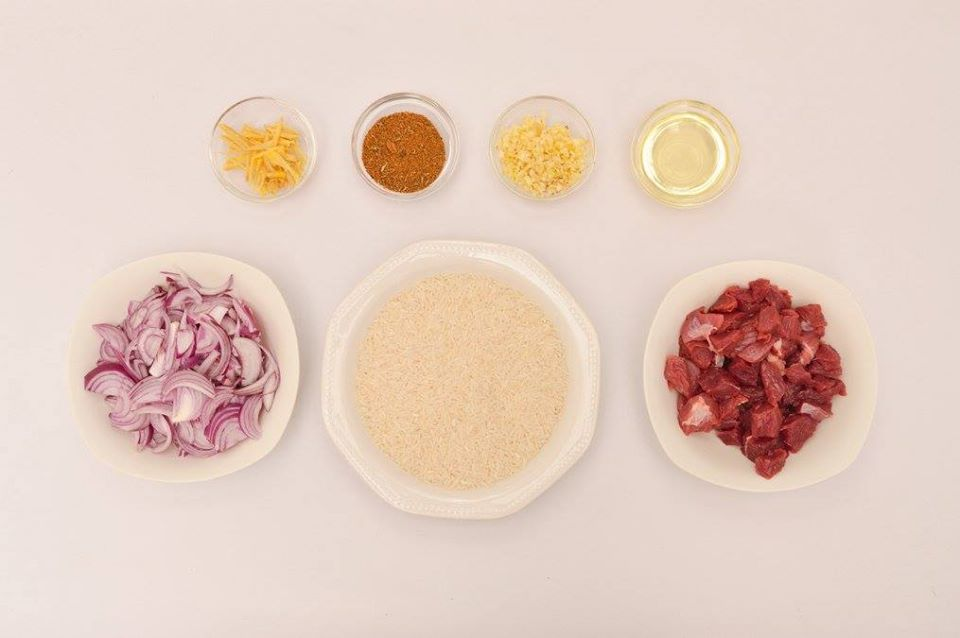
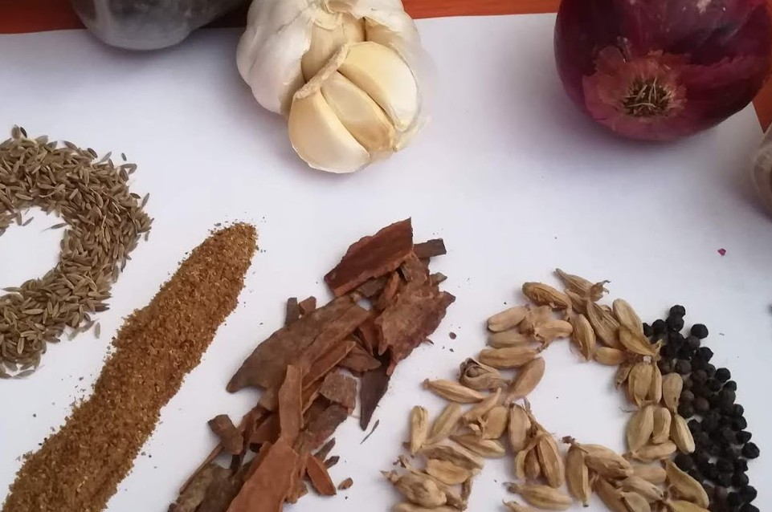
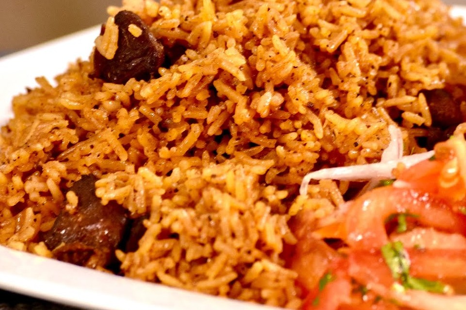
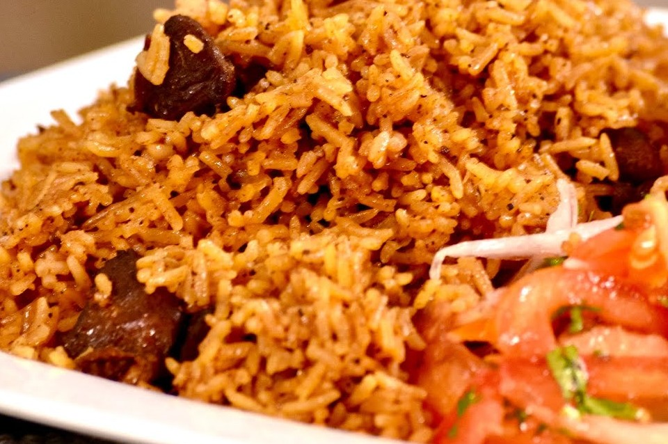

COOKING MADE EASY
COOKING BEEF PILAU
With your Favourite cook - Chef Pius
Pilau is a Kenyan food that originated from coastal Kenya because of their love for spices Pilau can be prepared from Beef and Rice or Chicken and Rice or just Rice. Pilau is loved accrose East Africa and i think India and the Middle East, In Uganda where i come from, its not a party or ceremony if there is no Pilau as the main meal.
Ingredients


NOTE: tsp is for tea spoon, TPS is for table spoon
- 500g 🥩 Beef
- Pishori Rice, Washed and soaked for 15 minutes
- 2 Onions, choped
- Garlic
- Ginger
- 1 tsp Tumeric powder
- 3 🍅 Tomatoes
- Vegetable cooking oil
- Chopped coriander
- 2 TPS Powdered Spices(Pilau masala)
Steps for cooking
- Cut the meat into pieces and wash, then boil with some water, 1 tsp each of ginger and garlic paste, 1 tsp of salt, tsp of black pepper, 1 grated tomato and 1 grated onion.
- When the meat is tender, drain it and set aside. Keep the soup for cooking rice.
- Heat the sufuria(pan) on a medium heat and add the oil. Then add the whole spices that is cumin, cardamom, Pepper, cinnamon and cloves. Once they splutter in the oil, add chopped onions.
- Fry them until translucent while stirring them with a spoon. If you want darker pilau, fry the onions until they are dark and caramelised. Then add tumeric and coriander powder. Let them fry to a few minutes then add the garlic paste and a bit of chopped coriander
- Now you can add the boiled meat the stir together for 2 minutes. Then add soup and some salt. Let the soup simmer and taste for the salt. Make sure you put enough salt because of the rice.
- When the soup starts boiling, drain the rice and add rice to the soup. Sprinkle a bit of coriander on it and stir a little. Let it cook on a high heat for 3 minutes then reduce to a medium heat and keep cooking while covered until the water finishes.
- Make sure you stir every now and then to make sure all the rice is cooked evenly and perfectly 🥘. Then you can reduce the heat to a very low heat and leave it to continue steaming for 5 minutes. Switch off the heat and serve with Kachumbari.
 

Check out the links below for more information about how to cook the best pilau